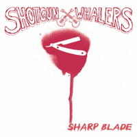

Shotgun Whalers - Sharp Blade (Album, 2010)
01 - Hotrod Heart (1:49)
02 - Black Suit (2:05)
03 - Sharp Blade (2:32)
04 - I Wanna' See My Baby (3:44)
05 - Hot Bop Hot Rock (2:43)
06 - Long Lost John (1:44)
07 - Shrimp Stomp (3:19)
08 - Ms Razzle Dazzle (3:30)
09 - I Need A Drink (2:06)
10 - A Guy Named John (2:27)
11 - I Don't Wanna Do That (2:53)
12 - Primerkings (2:03)
© Shotgun Records Norway :: [SR001]
Notes
Norway.
Simen Sveberg Andreassen - Vocals, Guitar
Oddvar Stensrud - Bass
Hallvard Eriksen - Guitar
Robert Skoglund - Drums
Recorded live at Studio 1915, Holmestrand
Mastered by Rune Thoen, mixed by Simen Andreassen, produced by Shotgun Whalers
Songs are written-by (here and further: or credited to) Andreassen: "Hotrod Heart", "Black Suit", "Sharp Blade", "Hot Bop Hot Rock", "A Guy Named John", "I Don't Wanna Do That", "Primerkings"
Songs are written-by Eriksen: "Shrimp Stomp", "I Need A Drink"
Song is written-by Kristensen / Andreassen: "I Wanna' See My Baby"
Song is written-by Kristensen / Eriksen / Andreassen: "Ms Razzle Dazzle"
"Long Lost John" is a traditional song
reference information: Discogs®
Review
302/366 (Project 366)
Modern way of doing Rockabilly.